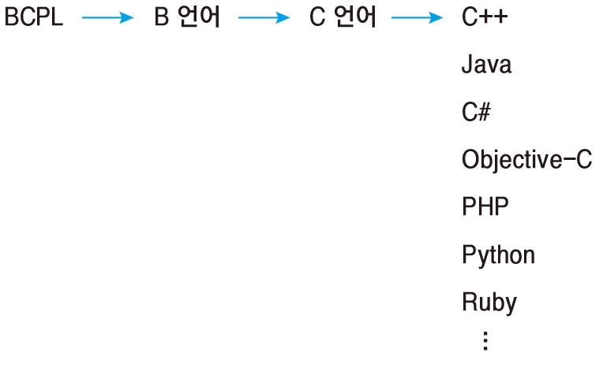
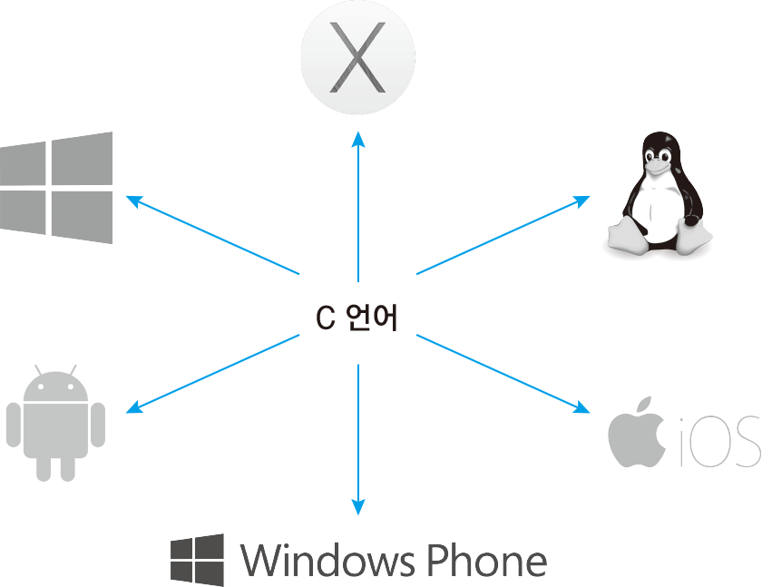

Yongyong's C programming
C Programming
- Array
- Pointer
- Struct
- String
C 언어는 1972년 켄 톰슨과 데니스 리치가 벨 연구소에서 일할 당시 유닉스
운영체제를 만들기 위해 고안한 프로그래밍 언어이다.
그런데 A언어도 아니고 왜 C언어 일까? 처음에 켄 톰슨은 BCPL 언어를 입맛에 맞게 고쳐서
B언어를 개발했는데 후에 데니스 리치가 B언어를 개선하여 C언어가 탄생했다.

C언어는 이후의 프로그래밍 언어에 직간접적으로 많은 영향을 주었는데 c언어를
배우면 다른 언어를 배우기 쉽다고 하는 이유도 이 때문이다. 프로그래밍 세계의 공통어라 할 수 있다.
우리가 지금도 쓰고 있는 Windows,Linux,OS X와 iOS, Android, Windiws Phone 모바일 운영체제의
핵심요소인 커널은 C언어로 만들어져 있다. 즉, 운영체제의 모든 기능을 이용할 수 있는 건 C언어이다. 다른 언어들은
모두 C 언어의 기능을 가져다 쓰는 구조이다.
